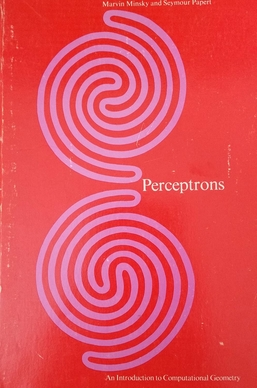

Uso de IA: ferramentas e tendências
Prof. Nicola, Prof. César e Prof. Romualdo


Rosenblatt (1958), Fig. 1: Organization of a perceptron
Entradasretina
Pesosconexões
Somaassociação
Limiar
Saídaresposta
errou? ajusta os pesos

Minsky & Papert
Perceptrons, 1969
·
·
·
·
O
gato
subiu
no
?
telhado
próxima palavra
Contexto
O…
O gato…
O gato subiu…
O gato subiu no…
rede recorrente
atenção
tokens
O gato subiu no telhado
Quantos r tem strawberry?
prompt
1queijo =>
←prompt
ModeloQueijo é um alimento feito a partir do leite coalhado. Existem centenas de tipos, como o minas, o parmesão e o gorgonzola.
zero-shot
1Traduza do português para o inglês:
2queijo =>
←descrição da tarefa
←prompt
ModeloQueijo, em inglês, é “cheese”.
one-shot
1Traduza do português para o inglês:
2lontra-marinha => sea otter
3queijo =>
←descrição da tarefa
←exemplo
←prompt
Modelocheese
few-shot
1Traduza do português para o inglês:
2lontra-marinha => sea otter
3hortelã-pimenta => peppermint
4girafa de pelúcia => plush giraffe
5queijo =>
←descrição da tarefa
←exemplos
←prompt
Modelocheese
prompt
PDFs e políticas
planilhas
e-mails
transcrições de reunião
site da empresa
base de conhecimento
janela de contexto
2.048tokens no GPT-3 (2020)
1 milhãode tokens no Opus 5.5
janela de contexto
precedência
System promptde quem fez o app
Descrições das skillsuma linha de cada
Instruções personalizadasescritas uma vez
Históricoanexo
Mensagem atual“faça a ata da reunião”
Turno do modeloskill: ataferramentasresposta
Janela cheia: as mensagens mais antigas saem primeiro, com o anexo
skills
Relatório mensal
Ata de reunião
Proposta comercial
Quanto custa, em reais, um jantar em Lisboa hoje?
buscar("preço médio jantar Lisboa")
observacerca de €25 por pessoa
pensaAgora, a cotação do euro hoje.
agebuscar("cotação euro hoje")
observa€ 1 = R$ 6,10
pensaFalta converter.
agecalcular(25 × 6,10)
observa152,50
Cerca de R$ 150 por pessoa.
o que você vê
o que está por trás
Harness
1instruções do projeto
2memória
3histórico da conversa
4anexos
5busca na web
6skills e ferramentas
Modelo
processos acadêmicos